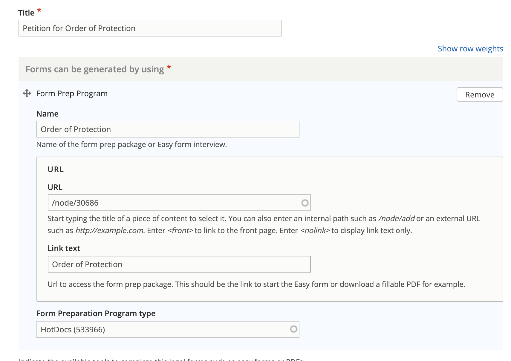

Restructuing Easy forms and blank forms for use in steps¶
Legal forms can be part of a legal step. Legal forms should be the specific form, not to a form generator packet.
Relationship to Easy Forms¶
Easy forms are our guided interviews that generate one or more court forms. An Easy form may be referenced as the form prep program that generates the specific legal form.
For example, our Order of Protection Easy Form generates:
Petition for Order of Protection
Emergency Order of Protection
Order of Protection
Summons (Protective Orders)
Additional Incidents of Abuse
Additional Case Information
Confidential Name & Location of the School or Daycare
Affidavit of Parenting Time Supervisor
Each of these would be created as Legal forms and would link to the Easy form.
Relationship to Statewide fillable PDFs¶
Like Easy forms, PDF is a type of form prep program that can be added to a legal form.
Creating and editing a legal form¶
A legal form should have:
A title (the name of the form)
A content and meta description
A form can be generated by using section with 1 or more generators:
The name of the Easy form or PDF that can be used to complete the form
The url to the form
The link text (this is optional)
The form preparation program type. This is an ILAO taxonomy that includes:
A2J interview
Docassemble
HotDocs
PDF
Optionally, indicate the form use. This is particularly helpful when the form is part of a larger package and is only sometimes generated. For example: This form is required when there are minor children in a divorce-related case.
Indicate the jurisdiction for the legal form.
Note
Both legal forms and legal steps have jurisdiction tags. It is possible for a step to be statewide and have legal forms that apply only to a specific jurisdiction. It is not necessary to create individual steps for jurisdictions unless the step content itself varies by zip code, city, county, or state.
Create separate steps in this example: Legal Forms - Kane county and Legal Forms - Lake county have different signing requirements that need to be included in the Directions for the step.
Do not create separate steps in this example: Legal Forms - Kane county and Legal Forms - Lake county have identical instructions for filling out the form but the forms themselves are different